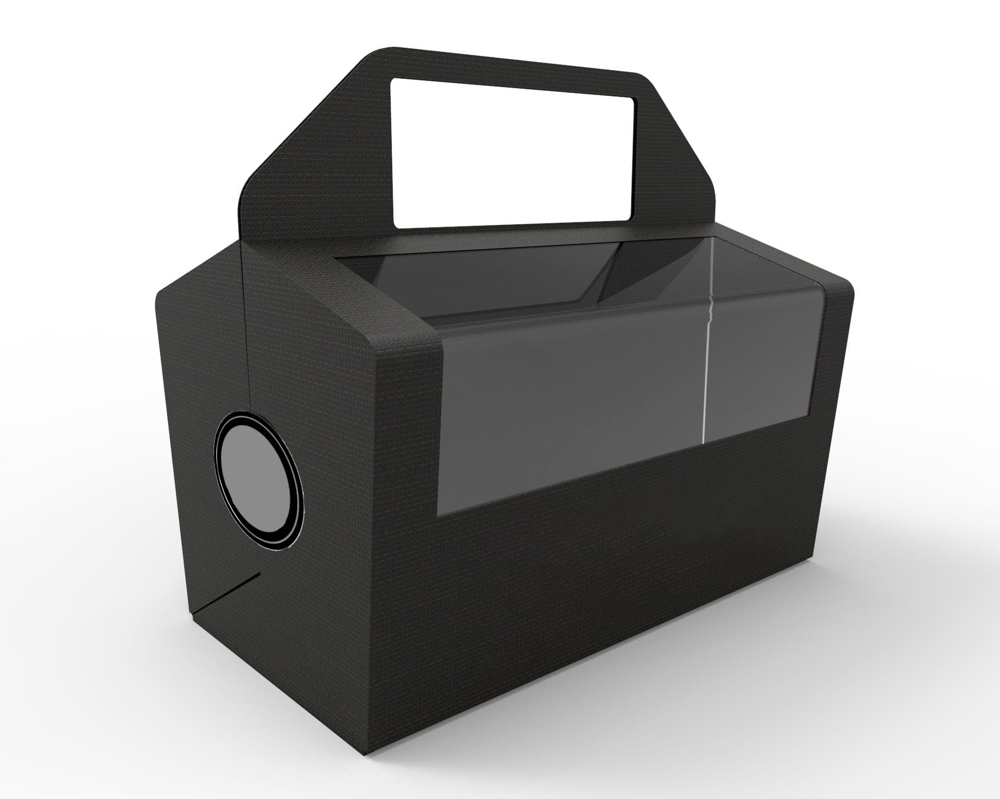

●
________________________________________________________________
Sushiaway - Ecodiseño de un envase para comida take away
●

●
La comida para llevar se impone cada vez mas en as costumbres diarias de las personas activas,
por falta de tiempo en la pausa de la comida o simplemente pereza de cocinar.
Lamentablemente la mayoría de las veces lo que pasa con este estilo de comida es que
el packaging abulta más que el producto mismo...
Tras estudiar los envases que se usan para vender sushi para llevar, bien es cierto que
todos los elementos que van dentro de la bolsa son necesarios para un consumo de sushi «común»
:untar el sushi en la bandeja de salsa, acompañarlo de condimentos como el jengibre y comerlo con los palillos...
¡Pero se pueden optimizar! Y así es como reflexionando sobre las costumbres de consumo
y mejorando la experiencia de este llegamos a la propuesta Sushiaway.
●
●
________________________________________________________________
●
Cambiamos los utensilios por unos de materiales mas sostenibles: principalmente compuesto de pulpa de papel,
lo que hace que su reciclaje y bio-degradabilidad sea óptima, el porcentaje de materiales reciclables
o orgánicos es mucho superior en este sistema.
Los palillos son remplazados por una hoja de madera ergonómica que permite consumir el sushi
de forma tradicional con las manos, conservando un aspecto higiénico
por el hecho de ser una comida take away.
●
●
●
●
______________________________________Además con esta forma, la experiencia de consumir el sushi de manera take away más cómoda:
el envase se habré mostrando el sushi en en centro y convirtiéndose en bandeja que puede
sostenerse en una sola mano para poder servirse con la otra (y asi nos ahorramos el buscar
una mesa donde apoyarnos).

●
Esta innovación da un nuevo valor al envase:
guardando una estética sobria pero eficiente digna de la cultura japonesa.
________________________________________________________________
●
●
________________________________________________________________
●